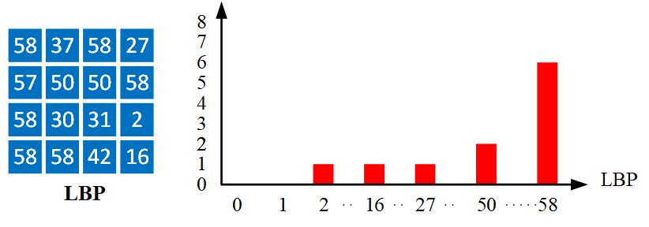

Brief Description: LBP is a descriptor for describing the texture of a rectangular block consisting of two steps. The first step is to encode every point in the block as a pattern called LBP. Then, a 3x3 mask centered at every point is used for LBP encoding
